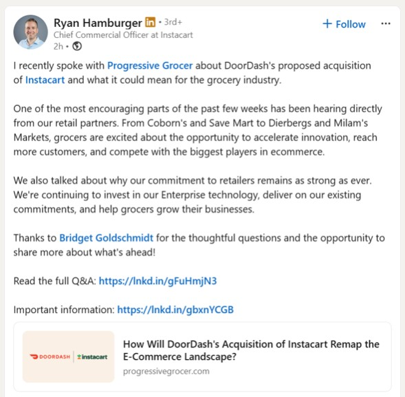

<DOCUMENT>
<TYPE>425
<SEQUENCE>1
<FILENAME>d363307d425.htm
<DESCRIPTION>425
<TEXT>
<HTML><HEAD>
<TITLE>425</TITLE>
</HEAD>
 <BODY BGCOLOR="WHITE" STYLE="line-height:Normal">


<Center><DIV STYLE="width:8.5in" align="left">
 <P STYLE="margin-top:0pt; margin-bottom:0pt; font-size:10pt; font-family:Times New Roman" ALIGN="right">Filed byMaplebear Inc. </P>
<P STYLE="margin-top:0pt; margin-bottom:0pt; font-size:10pt; font-family:Times New Roman" ALIGN="right">pursuant to Rule 425 under the Securities Act of 1933 </P>
<P STYLE="margin-top:0pt; margin-bottom:0pt; font-size:10pt; font-family:Times New Roman" ALIGN="right">and Deemed Filed pursuant to Rule <FONT STYLE="white-space:nowrap">14a-12</FONT> </P>
<P STYLE="margin-top:0pt; margin-bottom:0pt; font-size:10pt; font-family:Times New Roman" ALIGN="right">under the Securities Exchange Act of 1934 </P>
<P STYLE="margin-top:12pt; margin-bottom:0pt; font-size:10pt; font-family:Times New Roman" ALIGN="right">Subject Company: Maplebear Inc. </P>
<P STYLE="margin-top:0pt; margin-bottom:0pt; font-size:10pt; font-family:Times New Roman" ALIGN="right">Commission File No.: <FONT STYLE="white-space:nowrap">001-41805</FONT> </P>
<P STYLE="margin-top:0pt; margin-bottom:0pt; font-size:10pt; font-family:Times New Roman" ALIGN="right">Date: November&nbsp;24, 2026 </P> <P STYLE="margin-top:12pt; margin-bottom:0pt; font-size:10pt; font-family:Times New Roman"><B>This filing
relates to the proposed transaction between DoorDash, Inc., a Nevada corporation (&#8220;DoorDash&#8221;), and Maplebear Inc., a Delaware corporation (&#8220;Instacart&#8221;), pursuant to the terms of that certain Agreement and Plan of Merger,
dated as of October&nbsp;28, 2026, among DoorDash, Ibiza Merger Sub, Inc., a Delaware corporation and a wholly owned subsidiary of DoorDash, and Instacart: </B></P> <P STYLE="font-size:12pt;margin-top:0pt;margin-bottom:0pt">&nbsp;</P>
<P STYLE="margin-top:0pt;margin-bottom:0pt" ALIGN="center">



 </P>
</DIV></Center>


<p style="margin-top:1em; margin-bottom:0em; page-break-before:always"> </p>
<HR SIZE="3" style="COLOR:#999999" WIDTH="100%" ALIGN="CENTER">


<Center><DIV STYLE="width:8.5in" align="left">
 <P STYLE="margin-top:0pt; margin-bottom:0pt; font-size:10pt; font-family:Times New Roman"><B><I>Forward-Looking Statements </I></B></P>
<P STYLE="margin-top:6pt; margin-bottom:0pt; font-size:10pt; font-family:Times New Roman">This communication contains forward-looking statements within the meaning of Section&nbsp;27A of the Securities Act of 1933, as amended, and Section&nbsp;21E
of the Securities Exchange Act of 1934, as amended, which statements involve substantial risks and uncertainties. Forward-looking statements generally relate to future events or the future financial or operating performance of DoorDash, Inc.
(&#8220;<B><I>DoorDash</I></B>&#8221;) or Maplebear Inc. (the &#8220;<B><I>Company</I></B>&#8221;). In some cases, you can identify forward-looking statements because they contain words such as &#8220;may,&#8221; &#8220;aim,&#8221;
&#8220;will,&#8221; &#8220;should,&#8221; &#8220;expect,&#8221; &#8220;plan,&#8221; &#8220;try,&#8221; &#8220;anticipate,&#8221; &#8220;could,&#8221; &#8220;would,&#8221; &#8220;intend,&#8221; &#8220;target,&#8221; &#8220;project,&#8221;
&#8220;contemplate,&#8221; &#8220;believe,&#8221; &#8220;estimate,&#8221; &#8220;predict,&#8221; &#8220;potential,&#8221; &#8220;toward,&#8221; or &#8220;continue&#8221; or the negative of these words or other similar terms or expressions that
concern DoorDash&#8217;s or the Company&#8217;s expectations, strategies, plans, or intentions. Forward-looking statements in this communication include, but are not limited to, statements regarding the proposed acquisition of the Company by
DoorDash pursuant to the Agreement and Plan of Merger among DoorDash, Ibiza Merger Sub, Inc., a wholly owned subsidiary of DoorDash, and the Company (the &#8220;<B><I>Merger Agreement</I></B>&#8221; and such transaction, the &#8220;<B><I>Proposed
Transaction</I></B>&#8221;); the expected financing of the Proposed Transaction; the expected timing and likelihood of completion of the Proposed Transaction on the terms contemplated or at all; the expected benefits, synergies, and strategic value
of the Proposed Transaction, including the future financial and operating performance of the combined company; DoorDash&#8217;s plans and expectations regarding the integration of the Company; and the plans, objectives, expectations, and intentions
of DoorDash and the Company with respect to the Proposed Transaction, the period of pendency of the Proposed Transaction, and the combined company. These expectations and beliefs may not materialize, and actual results in future periods are subject
to risks and uncertainties that could cause actual results to differ materially from those projected, including risks and uncertainties related to: the occurrence of any event, change, or other circumstance that could give rise to the termination of
the Merger Agreement, including circumstances requiring a party to pay a termination fee or reimburse expenses; the ability to obtain, or delays in obtaining, governmental and regulatory approvals required for the Proposed Transaction, including the
expiration or termination of the waiting period under the Hart-Scott-Rodino Antitrust Improvements Act of 1976, as amended, and any required clearance or approval under the Competition Act (Canada) or under the Israeli Economic Competition <FONT
STYLE="white-space:nowrap">Law-1988,</FONT> and the risk that such approvals may result in the imposition of conditions that could adversely affect the combined company or the expected benefits of the Proposed Transaction; the ability to obtain the
requisite approval of the Company stockholders; the satisfaction or waiver of the other conditions to the closing of the Proposed Transaction; delays in completing the Proposed Transaction, or the failure to complete the Proposed Transaction at all;
the ability to obtain adequate financing or financings on satisfactory terms and the effect of any indebtedness incurred in connection with the Proposed Transaction on the combined company&#8217;s credit ratings; the ability to successfully
integrate the Company&#8217;s business and to realize the anticipated cost savings, synergies, and other benefits of the Proposed Transaction within the expected timeframe or at all; the effect of any announcement relating to the Proposed
Transaction on the market price of DoorDash&#8217;s or the Company&#8217;s common stock; fluctuations in the market price of DoorDash common stock and the possibility that the Company stockholders may receive a form of consideration different from
what they elect as a result of proration; the nature, cost, and outcome of any litigation related to the Proposed Transaction; the risk that the Proposed Transaction disrupts current plans and operations or diverts management&#8217;s attention from
ongoing business operations and opportunities; adverse reactions or changes to business or employee relationships resulting from the announcement, pendency, or completion of the Proposed Transaction; the ability of DoorDash and the Company to retain
and hire key personnel; economic, financial, social, or political conditions that could adversely affect DoorDash or the Company; the macroeconomic environment and geopolitical uncertainty; competition; changes in legislation or governmental
regulations; legal proceedings and regulatory matters and developments; and DoorDash&#8217;s and the Company&#8217;s respective brands and reputations. The forward-looking statements contained in this communication are also subject to other risks
and uncertainties that could cause actual results to differ from the results predicted, including those more fully described in the filings of DoorDash and the Company with the Securities and Exchange Commission (the
&#8220;<B><I>SEC</I></B>&#8221;), including DoorDash&#8217;s and the Company&#8217;s respective Annual Reports on Form <FONT STYLE="white-space:nowrap">10-K</FONT> for the year ended December&nbsp;31, 2025 and quarterly reports on Form <FONT
STYLE="white-space:nowrap">10-Q</FONT> filed thereafter, as well as in the registration statement on Form <FONT STYLE="white-space:nowrap">S-4</FONT> and the proxy statement/prospectus described below when they become available. All forward-looking
statements in this communication are based on information available to DoorDash and the Company and assumptions and beliefs as of the date hereof, and each of DoorDash and the Company disclaims any obligation to update any forward-looking
statements, except as required by law. </P>
</DIV></Center>


<p style="margin-top:1em; margin-bottom:0em; page-break-before:always"> </p>
<HR SIZE="3" style="COLOR:#999999" WIDTH="100%" ALIGN="CENTER">


<Center><DIV STYLE="width:8.5in" align="left">
 <P STYLE="margin-top:0pt; margin-bottom:0pt; font-size:10pt; font-family:Times New Roman"><B><I>Important Additional Information Will Be Filed with the SEC and Where to Find It </I></B></P>
<P STYLE="margin-top:6pt; margin-bottom:0pt; font-size:10pt; font-family:Times New Roman">In connection with the Proposed Transaction, DoorDash intends to file with the SEC a registration statement on Form <FONT STYLE="white-space:nowrap">S-4</FONT>
(the &#8220;<B><I>Registration Statement</I></B>&#8221;) to register the shares of DoorDash common stock to be issued in connection with the Proposed Transaction. The Registration Statement will include a proxy statement of the Company that also
constitutes a prospectus of DoorDash (the &#8220;<B><I>proxy statement/prospectus</I></B>&#8221;). Each of DoorDash and the Company may also file other relevant documents with the SEC regarding the Proposed Transaction. After the Registration
Statement has been declared effective by the SEC, a definitive proxy statement/prospectus will be mailed to stockholders of the Company as of the record date established for voting on the Proposed Transaction. This communication is not a substitute
for the Registration Statement, the proxy statement/prospectus, or any other document that DoorDash or the Company may file with the SEC in connection with the Proposed Transaction. INVESTORS AND SECURITY HOLDERS OF DOORDASH AND THE COMPANY ARE
URGED TO READ THE REGISTRATION STATEMENT, INCLUDING THE PROXY STATEMENT/PROSPECTUS AND DOCUMENTS INCORPORATED THEREIN BY REFERENCE, AND ANY OTHER RELEVANT DOCUMENTS THAT ARE FILED OR WILL BE FILED WITH THE SEC, AS WELL AS ANY AMENDMENTS OR
SUPPLEMENTS TO THOSE DOCUMENTS, CAREFULLY AND IN THEIR ENTIRETY IF AND WHEN THEY BECOME AVAILABLE BECAUSE THEY WILL CONTAIN IMPORTANT INFORMATION ABOUT DOORDASH, THE COMPANY, THE PROPOSED TRANSACTION, THE RISKS RELATED THERETO, AND RELATED MATTERS.
</P> <P STYLE="margin-top:12pt; margin-bottom:0pt; font-size:10pt; font-family:Times New Roman">Investors and security holders will be able to obtain free copies of the Registration Statement and the proxy statement/prospectus (when available), as
each may be amended or supplemented from time to time, and other documents containing important information about DoorDash, the Company, and the Proposed Transaction, once such documents are filed with the SEC, through the website maintained by the
SEC at www.sec.gov. Copies of the documents filed with the SEC by DoorDash, including the proxy statement/prospectus (when available), will be available free of charge on DoorDash&#8217;s investor relations website at ir.doordash.com. Copies of the
documents filed with the SEC by the Company, including the proxy statement/prospectus (when available), will be available free of charge on the Company&#8217;s investor relations website at investors.instacart.com. </P>
<P STYLE="margin-top:18pt; margin-bottom:0pt; font-size:10pt; font-family:Times New Roman"><B><I>Participants in the Solicitation </I></B></P> <P STYLE="margin-top:6pt; margin-bottom:0pt; font-size:10pt; font-family:Times New Roman">DoorDash, the
Company, and certain of their respective directors, executive officers, and other members of management and employees may be deemed to be participants in the solicitation of proxies from the Company&#8217;s stockholders in respect of the Proposed
Transaction under the rules of the SEC. Information about the directors and executive officers of DoorDash, including a description of their direct or indirect interests, by security holdings or otherwise, is set forth in DoorDash&#8217;s Annual
Report on Form <FONT STYLE="white-space:nowrap">10-K</FONT> for the year ended December&nbsp;31, 2025, its definitive proxy statement on Schedule 14A for its 2026 Annual Meeting of Stockholders, and its definitive information statement on Schedule
14C filed with the SEC on August&nbsp;27, 2026 (including the beneficial ownership information set forth therein), each filed with the SEC. Information about the directors and executive officers of the Company, including a description of their
direct or indirect interests, by security holdings or otherwise, is set forth in the Company&#8217;s Annual Report on Form <FONT STYLE="white-space:nowrap">10-K</FONT> for the year ended December&nbsp;31, 2025 and its definitive proxy statement on
Schedule 14A for its 2026 Annual Meeting of Stockholders, each filed with the SEC. To the extent holdings of securities by the directors and executive officers of DoorDash or the Company have changed from the amounts reflected therein, such changes
have been or will be reflected on Initial Statements of Beneficial Ownership of Securities on Form 3, Statements of Changes in Beneficial Ownership on Form 4, or Annual Statements of Changes in Beneficial Ownership of Securities on Form 5
subsequently filed with the SEC. </P> <P STYLE="margin-top:12pt; margin-bottom:0pt; font-size:10pt; font-family:Times New Roman">Other information regarding the interests of participants in the proxy solicitation, which may differ from the interests
of DoorDash and the Company stockholders generally, will be contained in the Registration Statement, the proxy statement/prospectus, and other relevant materials to be filed with the SEC regarding the Proposed Transaction when they become available.
Investors and security holders should read the proxy statement/prospectus carefully when it becomes available before making any voting or investment decisions. You may obtain free copies of these documents from DoorDash or the Company using the
sources indicated above. </P>
</DIV></Center>


<p style="margin-top:1em; margin-bottom:0em; page-break-before:always"> </p>
<HR SIZE="3" style="COLOR:#999999" WIDTH="100%" ALIGN="CENTER">


<Center><DIV STYLE="width:8.5in" align="left">
 <P STYLE="margin-top:0pt; margin-bottom:0pt; font-size:10pt; font-family:Times New Roman"><B><I>No Offer or Solicitation </I></B></P>
<P STYLE="margin-top:6pt; margin-bottom:0pt; font-size:10pt; font-family:Times New Roman">This communication is for informational purposes only and is not intended to and shall not constitute an offer to sell, buy, or exchange, or the solicitation
of an offer to sell, subscribe for, buy, or exchange any securities, or a solicitation of any vote or approval, in any jurisdiction, nor shall there be any sale, issuance, exchange, or transfer of securities in any jurisdiction in which such offer,
solicitation, or sale would be unlawful prior to registration or qualification under the securities laws of any such jurisdiction. No offer of securities, including the shares of DoorDash common stock to be issued as part of the merger consideration
in the Proposed Transaction, shall be made except by means of a prospectus meeting the requirements of Section&nbsp;10 of the Securities Act of 1933, as amended, and otherwise in accordance with applicable law. </P>
</DIV></Center>

</BODY></HTML>
</TEXT>
</DOCUMENT>
